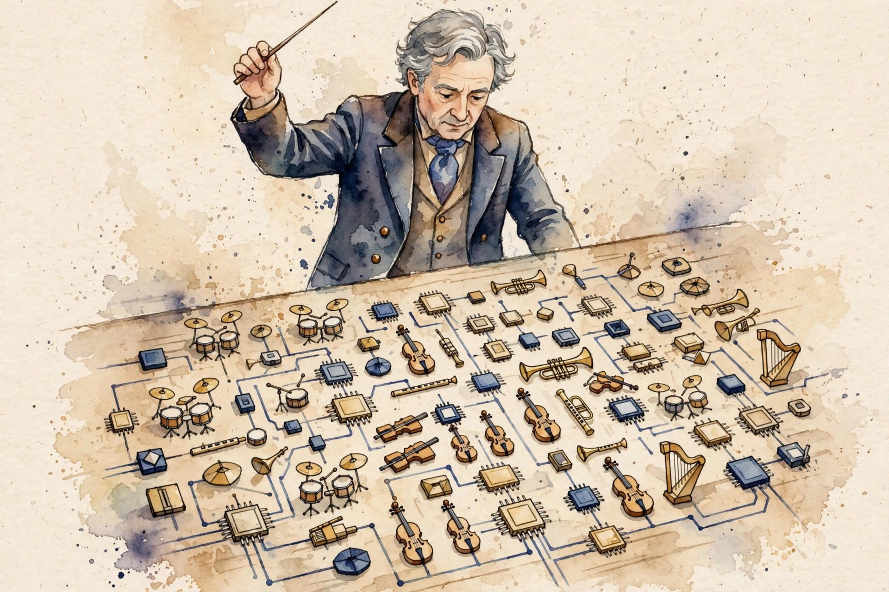
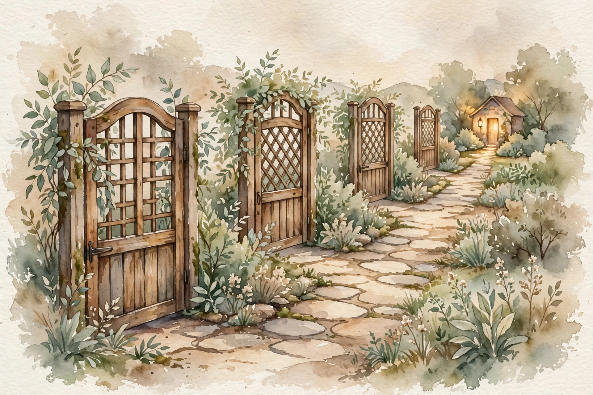

CS224N · Companion artifact U15 of 15
This unit turns the course into a project: the tutorials, the default project recipe, the project machinery, and the open horizon.
“From the lesson” marks facts from lessons/u15_projects_open_questions.md. “Illustration” marks interactive toys that run the lesson’s rules over tiny inputs. “Companion” marks advice from the companion author. Sections cite the lesson leaves, for example C04.

Section 1 · C01
From the lessonC01 §2, §3
The loop over 1M tokens takes minutes, the vectorized version takes a second. Why? Python is the conductor, numpy is the orchestra. The conductor waves (calls), the orchestra plays (C loops). Conduct, do not play. The mechanism is where the loop runs: C for numpy, Python for the for-loop. Same arithmetic, 200x the speed.
From the lessonC01 §4, §5
Hand-set toy, labeled as such: numpy dot on 1M floats: 0.002 s. Python loop: 0.4 s. Measure on your machine. The ratio holds.
From the lessonC01 §11
The broken assumption is that vectorized is always faster. Tiny arrays: the call overhead dominates. Vectorize the big loops.
Conduct, do not play. Push the loop into C, then profile before optimizing anything else.
Illustration The 200x estimator. The factor and the hand-set times are C01’s. The array size is yours.
array size (floats)
Section 2 · C02
From the lessonC02 §2, §3
Who computes the gradient? PyTorch records what you did (the graph) and replays it backwards (the gradient). You write the forward, it writes the backward. The mechanism is U03's chain rule, automated: each op knows its local derivative, the engine multiplies them.
From the lessonC02 §4, §5
Hand-set toy, labeled as such: x = tensor(2.0, requires_grad=True), y = x**2, y.backward(): x.grad is 4.0. Autograd did the chain rule: dy/dx = 2x = 4.
From the lessonC02 §11
The broken assumption is that the graph is free. Keeping the graph for 1000 steps eats memory. Detach or lose the graph.
Illustration The grad checker. The chain rule is C02’s. The function is yours. Try x = 2 with y = x**2.
x
y =
Section 3 · C03
From the lessonC03 §2, §3
You need a pretrained model in 5 lines. How? The hub is a library, the API is the librarian. You ask for a model by name and version. You get weights and config. The mechanism is the pipeline: tokenize, batch, forward, decode. Each stage has a contract (shapes, padding).
From the lessonC03 §4, §5
Hand-set toy, labeled as such: batch of 4, length 7, vocab 50: logits (4, 7, 50). The shapes are the contract (U03 C11's lesson).
From the lessonC03 §11
The broken assumption is that the name is the model. The revision moved, your numbers changed. Pin everything.
Pin the version or the library moves under you. The name is not the model.
Illustration The shape contract. The (4, 7, 50) rule is C03’s. The batch and length are yours.
batch
length
vocab
Section 4 · C04
From the lessonC04 §2, §3
What is the least you can build and call it GPT-2? GPT-2 is embeddings plus transformer blocks plus a head, trained to predict the next token. The miniature has every part, just small. Scale is a dial, not a different machine. Params = embeddings (Vd + nd) + L times (attention + MLP). The loss is U04's next-token cross-entropy.
From the lessonC04 §4, §5
From compute_u15.py: V = 1000, n = 128, d = 8, L = 4, ffn = 512: 44,928 params. The toy loss falls 1.164 to 1.043 on random data (the probe learns the mean, honestly labeled).
From the lessonC04 §11
The broken assumption is that the miniature predicts the full model. Capabilities emerge with scale (U06). The miniature teaches mechanics, not emergence.
compute_u15.py (executed 2026-10-08): embeddings 9,024, attention x4 1,056, MLP x4 34,848. Log scale.compute_u15.py (executed 2026-10-08): 1.164 to 1.043. The probe learns the mean.Scale is a dial, not a different machine. The miniature teaches mechanics. Emergence comes later.
Illustration The param counter. The formula is C04’s. The sizes are yours. Prefilled with the lesson toy.
V
n
d
L
ffn
Section 5 · C05
From the lessonC05 §2, §3
The model is trained. Now what? Pretraining is school, downstream tasks are the jobs. The template: attach a head, fine-tune a little, report with intervals (U10's discipline).
From the lessonC05 §4, §5
From compute_u15.py (labeled toy): three tasks with toy scores: paraphrase 0.81 +/- 0.03, sentiment 0.93 +/- 0.01, QA 0.68 +/- 0.05. QA's 0.05 SE is the widest: the task needs more items.
From the lessonC05 §11
The broken assumption is that the toy scores are real. They are template numbers. Never cite them as findings.
compute_u15.py (executed 2026-10-08), labeled toy: paraphrase 0.81 +/- 0.03, sentiment 0.93 +/- 0.01, QA 0.68 +/- 0.05. Never cite as findings.Template numbers are not findings. Report with intervals, and widen the task when the SE is wide.
Section 6 · C06
From the lessonC06 §2, §3
The project is 4 weeks. How do you not drift? The gates are the project's spine: the proposal promises, the milestone shows progress, the poster communicates, the report archives. The mechanism is the gate: each document answers "what did you claim, what did you find, what changed". The report is U10 C12's accounting plus U13 C12's impact.
From the lessonC06 §4, §5
From compute_u15.py: four gates from SRC-04: proposal, milestone, poster, report. Hand-set toy, labeled as such: the proposal claims "k=5 beats k=1 on our QA", the milestone shows the first numbers (k=5: 0.667 vs k=1: 0.000), the report's verdict. The numbers from U09's toys, reused honestly.
From the lessonC06 §11
The broken assumption is that the proposal survives. The data kills the claim at the milestone. Change the claim, log the change, continue.

compute_u15.py (executed 2026-10-08), from SRC-04.A gate without a claim is a status meeting. When the data kills the claim, change the claim and log the change.
Section 7 · C07
From the lessonC07 §2, §3
The idea needs 8 weeks, you have 4. What goes? U10 C11's scorecard, applied: scope is the art of the shippable. The mechanism is subtraction: list everything, cut until it fits the time box, keep the falsifiable core. A project that does one thing well beats a project that does three things badly.
From the lessonC07 §4, §5
From compute_u15.py: the scorecard reads 3/5 (missing: metric defined, novelty). Define the metric: 4/5. Cut the novelty: ship the measurement.
From the lessonC07 §11
The broken assumption is that the cut kept the claim. The cut may remove the control group. Cut scope, never the control.
compute_u15.py (executed 2026-10-08): 3/5, then 4/5 after the metric is defined. Cut novelty, ship the measurement.Cut scope, never the control. Subtraction keeps the falsifiable core inside the time box.
Illustration The scope card. The five items are C07’s. The checks are yours. Prefilled with the lesson toy at 3/5.
Section 8 · C08
From the lessonC08 §2, §3
The project says "implement". What does that allow? Implementation is translation: spec to code. The spec is cited, the code is yours. Copying the translation is not translation. The mechanism is the test: shape checks (U03 C11), grad checks (U03 C10), the toy numbers. Tests are the proof of understanding.
From the lessonC08 §4, §5
Hand-set toy, labeled as such: your attention matches the spec's shapes (4, 7, 50) and the grad check passes. The code is yours, the idea is cited.
From the lessonC08 §11
The broken assumption is that clean code means your code. Renamed variables on copied code are cosmetics. The policy cares about provenance, not cosmetics.
Original code, cited ideas. Provenance, not cosmetics: tests are the proof of understanding.
Section 9 · C09
From the lessonC09 §2, §3
Your partner reruns your code and gets a different number. What broke? Reproducibility is the receipt: seeds, versions, data, commands. A result without a receipt is a story. The mechanism is the seed sweep: run k seeds, report mean and std. The tolerance is the std: differences inside it are noise.
From the lessonC09 §4, §5
From compute_u15.py: 5 seeds give mean 0.8045, std 0.0203. A rerun at 0.79 is consistent, at 0.70 is not. One seed is an anecdote, five are evidence.
From the lessonC09 §11
The broken assumption is "same seed, same number". GPU nondeterminism and library versions break it. Log those too.
compute_u15.py (executed 2026-10-08): 0.8069, 0.8038, 0.8408, 0.7870, 0.7840. Mean 0.8045, std 0.0203.Report the spread. One seed is an anecdote, five are evidence, and the std is the tolerance.
Illustration The rerun judge. The rule is C09’s: inside ±2 std of 0.8045 is consistent. The rerun score is yours.
rerun score
Section 10 · C10
From the lessonC10 §2, §3
The project worked. What did it not do? Limitations are the report's immune system: they stop the reader from overclaiming your work. The mechanism is the ranking: the limit that most threatens the claim goes first.
From the lessonC10 §4, §5
Hand-set toy, labeled as such: four limits, ranked: toy data (not real) first, then 5 seeds (not 50), one language (not twelve), no human eval. Toy data first: it threatens everything.
From the lessonC10 §11
The broken assumption is that the list is complete. The limit you forgot is the risk. Have someone else read it.
Limitations are the report's immune system. Rank them by threat. A missing section is a claim without a leash.
Section 11 · C11
From the lessonC11 §2, §3, §4
What is still unknown? Open questions are the field's todo list. This course ends where research begins. The list is dated: October 2026. It will age. The criterion: each question names the experiment that would answer it.
From the lessonC11 §5
Hand-set toy, labeled as such: the ICL mechanism (U08), faithful reasoning (U11), the scaling limit (U06), multilingual parity (U12), mechanistic understanding (U13). Each open, each with a closing experiment.
From the lessonC11 §11
The broken assumption is that the list is the field. The question nobody asked yet is the counterexample. Lists are partial.
Open questions · dated October 2026 (hand-set, from the lesson)
Section 12 · C12
From the lessonC12 §2, §3
Can you defend your project out loud? The defense is the course in miniature: say what you did, show the numbers, name the limits, answer the changed scenario. If you can defend it, you know it. The oral ladder: define, compute, derive, diagnose, design.
From the lessonC12 §4, §5
Hand-set toy, labeled as such: the defense of the U09 lab: claim (recall at k), evidence (0.000/0.333/0.667/1.000), limit (toy corpus), transfer (hourly updates). Four points, no slides needed.
From the lessonC12 §11
The broken assumption is that fluent means correct. The fluent rationalization (U11 C12) is the counterexample. The rubric scores evidence, not fluency.
The rubric scores evidence, not fluency. Claim stated, evidence shown, limit named, transfer answered: four points.
Illustration The defense grader. The four points are C12’s. The checks are yours.
Wisdom index